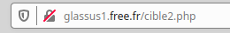

Requêtes GET, POST et formulaires⚓︎
1. Côté client : comment envoyer des paramètres à un serveur ?⚓︎
1.1. La méthode GET⚓︎
Considérons le formulaire suivant, inclus dans une page html ouverte dans le navigateur du client :
1 2 3 4 5 6 7 | |
Aperçu :

Explications :
- le fichier cible2.php est le fichier sur le serveur qui recevra les paramètres contenus dans le formulaire.
- le paramètre sera nommé pass et sera de type password, ce qui signifie qu'on n'affichera pas les caractères tapés par l'utilisateur.
On aurait pu aussi avoir un type :
- text : le texte s'affiche en clair (pour les login par ex)
- radio : pour une sélection (d'un seul élément)
- checkbox : pour une sélection (éventuellement multiple)
- un bouton comportant le label «Valider» déclenchera l'envoi (grâce au type particulier submit) des paramètres (ici un seul, la variable pass) au serveur.
Test :⚓︎
- Rendez-vous sur la page http://glassus1.free.fr/ex_get.html et testez un mot de passe.
- Observez attentivement l'url de la page sur laquelle vous êtes arrivés. Que remarquez-vous ?
La méthode GET et la confidentialité :⚓︎
Les paramètres passés au serveur par la méthode GET sont transmis dans l'url de la requête. Ils sont donc lisibles en clair par n'importe qui.

Évidemment, c'est une méthode catastrophique pour la transmission des mots de passe. Par contre, c'est une méthode efficace pour accéder directement à une page particulière : ainsi l'url https://www.google.fr/search?q=bordeaux nous amènera directement au résultat de la recherche Google sur le mot-clé «bordeaux».
1.2. La méthode POST⚓︎
Dans notre code de formulaire du 1.1, modifions l'attribut method, auparavant égal à "get". Passons-le égal à "post" :
1 2 3 4 5 6 7 | |
Test :⚓︎
- Rendez-vous sur la page http://glassus1.free.fr/ex_post.html et testez un mot de passe.
- Observez attentivement l'url de la page sur laquelle vous êtes arrivés. Que remarquez-vous ?
La méthode POST et la confidentialité :⚓︎
Les paramètres passés au serveur par la méthode POST ne sont pas visibles dans l'url de la requête. Ils sont contenus dans le corps de la requête, mais non affichés sur le navigateur.

Donc, la transmission du mot de passe est bien sécurisée par la méthode POST ?
Pas du tout ! Si le protocole de transmission est du http et non pas du https, n'importe qui interceptant le trafic peut lire le contenu de la requête et y trouver le mot de passe en clair.
Exemple avec Wireshark :
Le contenu de la variable "pass" est donc visible dans le contenu de la requête.
Le passage en https chiffre le contenu de la requête et empêche donc la simple lecture du mot de passe.
Résumé : quand utiliser GET ou POST ?⚓︎
- GET : la méthode GET doit être utilisée quand les paramètres à envoyer :
- n'ont pas de caractère confidentiel.
- n'ont pas vocation à créer des modifications sur le serveur (ceci est plus une bonne pratique qu'une interdiction technique)
- ne sont pas trop longs. En effet, vu qu'ils seront contenus dans l'url, il peut exister des limites de longueur spécifiques au navigateur. Une taille inférieure à 2000 caractère est conseillée.
Si vous vous demandez à quoi peuvent servir des url si longues, songez à ce type d'url, (ici PythonTutor) où le code du programme à analyser est contenu dans l'url :
http://pythontutor.com/visualize.html#code=L%20%3D%20%5B2,%203,%206,%207,%2011,%2014,%2018,%2019,%2024%5D%0A%0Adef%20trouve_dicho%28L,%20n%29%20%3A%0A%20%20%20%20indice_debut%20%3D%200%0A%20%20%20%20indice_fin%20%3D%20len%28L%29%20-%201%0A%20%20%20%20while%20indice_debut%20%3C%3D%20indice_fin%20%3A%0A%20%20%20%20%20%20%20%20indice_centre%20%3D%20%28indice_debut%20%2B%20indice_fin%29%20//%202%0A%20%20%20%20%20%20%20%20valeur_centrale%20%3D%20L%5Bindice_centre%5D%0A%20%20%20%20%20%20%20%20if%20valeur_centrale%20%3D%3D%20n%20%3A%0A%20%20%20%20%20%20%20%20%20%20%20%20return%20indice_centre%0A%20%20%20%20%20%20%20%20if%20valeur_centrale%20%3C%20n%20%3A%0A%20%20%20%20%20%20%20%20%20%20%20%20indice_debut%20%3D%20indice_centre%20%2B%201%0A%20%20%20%20%20%20%20%20else%20%3A%0A%20%20%20%20%20%20%20%20%20%20%20%20indice_fin%20%3D%20indice_centre%20-%201%0A%20%20%20%20return%20None%0A%0Aprint%28trouve_dicho%28L,14%29%29&cumulative=false&curInstr=0&heapPrimitives=nevernest&mode=display&origin=opt-frontend.js&py=3&rawInputLstJSON=%5B%5D&textReferences=false
-
POST : la méthode POST doit être utilisée quand les paramètres à envoyer :
- ont un caractère confidentiel (attention, à coupler impérativement avec un protocole de chiffrement).
- peuvent avoir une longueur très importante (le paramètre étant dans le corps de la requête et non plus dans l'url, sa longueur peut être arbitraire).
- ont vocation à provoquer des changements sur le serveur. Ainsi, un ordre d'achat sur un site de commerce sera nécessairement passé par une méthode POST. Les navigateurs préviennent alors le risque de «double commande» lors d'une actualisation malencontreuse de la page par l'utilisateur par la fenêtre :

Cette fenêtre est caractéristique de l'utilisation d'une méthode POST.
2. Côté serveur : comment récupérer les paramètres envoyés ?⚓︎
Du côté du serveur, le langage utilisé (PHP, Java...) doit récupérer les paramètres envoyés pour modifier les élements d'une nouvelle page, mettre à jour une base de données, etc. Comment sont récupérées ces valeurs ?
Exemple en PHP⚓︎
L'acronyme PHP signifie **P**HP : **H**ypertext **P**rocessor (c'est un acronyme récursif).
Notre exemple va contenir deux fichiers :
- une page page1.html , qui contiendra un formulaire et qui renverra, par la méthode GET, un paramètre à la page page2.php.
- une page page2.php , qui génèrera un code html personnalisé en fonction du paramètre reçu.
#### page1.html
1 2 3 4 5 6 7 8 9 10 11 12 13 14 15 16 17 18 19 20 | |
#### page2.php
```php
```
#### Détail du fonctionnement :
1. À l'arrivée sur la page page1.html, un formulaire de type boutons radio lui propose :
2. Lorsque l'utilisateur clique sur «Valider», la variable nommée OS va recevoir la valeur choisie et va être transmise par une requête GET à l'url donnée par la variable action définie en début de formulaire.
Ici, le navigateur va donc demander à accéder à la page page2.php?OS=MacOS (par exemple)
3. Le serveur PHP qui héberge la page page2.php va recevoir la demande d'accès à la page ainsi que la valeur de la variable OS.
Dans le code PHP, on reconnait :
- le booléen isset($_GET['OS']) qui vérifie si le paramètre OS a bien reçu une valeur.
- l'expression $_GET['OS'] qui récupère cette valeur.
Si la valeur avait été transmise par méthode POST (pour un mot de passe, par exemple), la variable aurait été récupérée par $_POST['OS']. Elle n'aurait par contre pas été affichée dans l'url de la page.
4. La page page2.php?OS=MacOS s'affiche sur le navigateur de l'utilisateur :
Remarque⚓︎
L'exemple ci-dessus est un mauvais exemple : rien ne justifie l'emploi d'un serveur distant. L'affichage de ce message aurait très bien pu se faire en local sur le navigateur du client, en Javascript par exemple.
L'envoi de paramètre à un serveur distant est nécessaire pour aller interroger une base de données, par exemple (lorsque vous remplissez un formulaire sur le site https://www.oui.sncf/, les bases de données des horaires de trains, des places disponibles et de leurs tarifs ne sont pas hébergées sur votre ordinateur en local...).
La vérification d'un mot de passe doit aussi se faire sur un serveur distant.
Exercice : attaque par force brute et requête GET⚓︎
Pré-requis 1 : le module requests en python⚓︎
Le module requests permet d'aller chercher le contenu d'une page web, suivant la syntaxe ci-dessous.
1 2 3 4 5 6 7 8 9 10 11 12 13 14 15 16 | |
Pré-requis 2 : l'extraction d'un fichier texte sous forme de liste⚓︎
Le code ci-dessous permet de collecter dans une liste mots l'ensemble des mots compris dans le fichier monfichiertexte.txt (si celui-ci comprend un mot par ligne)
1 2 3 4 5 6 | |
Exercice :⚓︎
Votre objectif est de trouver le mot de passe demandé sur la page http://glassus1.free.fr/exoBF.html
Vous allez vous appuyer sur un leak (fuite) très célèbre de mots de passe , qui est le leak du site Rockyou. Dans la base de données de ce site, 32 millions de mots de passe étaient stockés en clair ¯\_(ツ)_/¯.
Lorsque le site a été piraté (par une injection SQL, voir le cours de Terminale), ces 32 millions de mots de passe se sont retrouvés dans la nature. Ils sont aujourd'hui téléchargeables librement, et constituent un dictionnaire de 14 341 564 mots de passe différents (car parmi les 32 millions d'utilisateurs, beaucoup utilisaient des mots de passe identiques). Ce fichier est téléchargeable ici, mais attention il pèse 134 Mo.
Nous allons utiliser un fichier beaucoup plus léger ne contenant que les 1000 premiers mots de passe : vous le trouverez à l'adresse http://glassus1.free.fr/extraitrockyou.txt .
L'un de ces mots de passe est le mot de passe demandé à la page http://glassus1.free.fr/exoBF.html .
Lequel ?